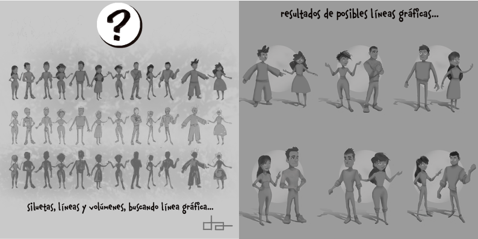
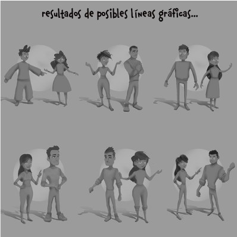
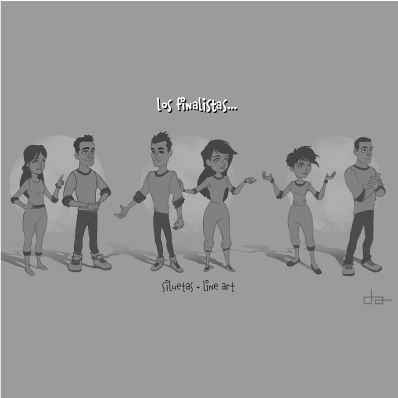
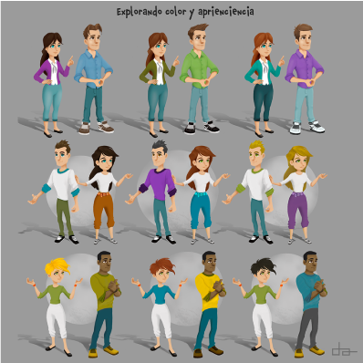
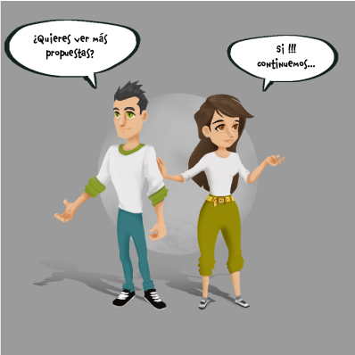
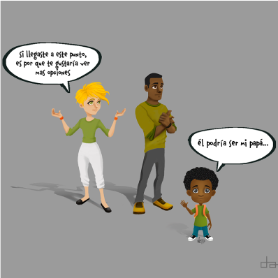
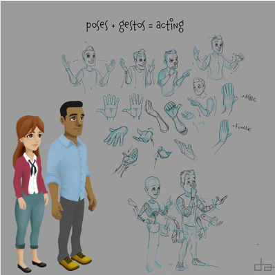
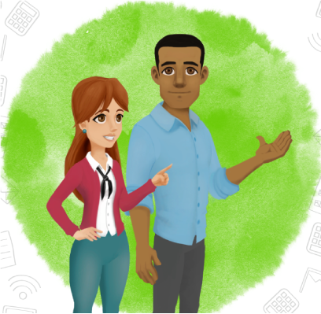

Diseño y creación audiovisual, ilustración, animación 3D, multimedia y Desarrollo-web utilizando múltiples disciplinas, herramientas y software de diseño gráfico, edición de video y desarrollo.
En esta sección podrás ver una selección de trabajos realizados en diferentes áreas del diseño y desarrollo.
Diseño Gráfico
El diseño gráfico es una disciplina creativa que combina arte y tecnología para comunicar ideas y mensajes visuales. Utiliza tipografía, imágenes, colores y composición para crear soluciones visuales efectivas en diversos medios, como impresión, digital y multimedia.
En esta sección podrás ver una selección de trabajos realizados en el área del diseño gráfico.
El arte 2D/3D es una forma de expresión visual que abarca tanto la creación de imágenes bidimensionales como tridimensionales. En el ámbito del diseño gráfico, el arte 2D se refiere a ilustraciones, gráficos y animaciones en dos dimensiones, mientras que el arte 3D implica la creación de modelos y entornos tridimensionales utilizando software especializado.
En esta sección podrás ver una selección de trabajos realizados en el área del arte 2D/3D.








Desliza las imágenes haciendo clic en los botones
Multimedia
La multimedia es una disciplina que combina diferentes formas de contenido, como texto, imágenes, audio y video, para crear experiencias interactivas y atractivas. Se utiliza en una variedad de aplicaciones, desde presentaciones y sitios web hasta videojuegos y aplicaciones educativas.
En esta sección podrás ver una selección de trabajos realizados en el área de multimedia.
NOTA IMPORTANTE: La visualización y navegación de este contenido es una demostración didáctica y no sugiere certificación ni comercialización por parte de ninguna entidad pública, privada o este sitio web. Todos los derechos pertenecen a Comfenalco Antioquia
Desarrollo Web
El desarrollo web es el proceso de crear y mantener sitios web y aplicaciones en línea. Implica el uso de lenguajes de programación, diseño gráfico y tecnologías web para construir experiencias digitales funcionales y atractivas.
En esta sección podrás ver una selección de trabajos realizados en el área del desarrollo web.